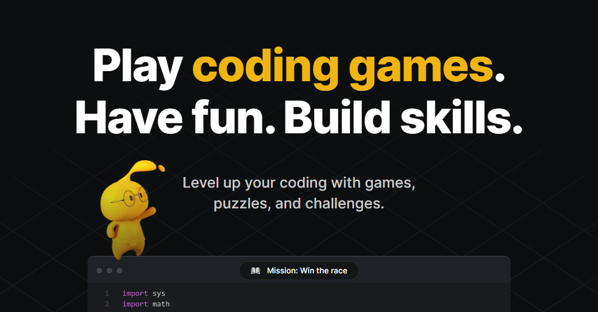

Uma plataforma focada em desafios envolvendo programação e treino da codificação.
Página Principal
Multiplas Linguagens

Gameplay interativa

Raciocinio Lógico
Uma plataforma focada em desafios envolvendo programação e treino da codificação.
Página Principal
Multiplas Linguagens
Gameplay interativa
Raciocinio Lógico
CodinGame é uma plataforma online voltada para a prática e o desenvolvimento de habilidades de programação por meio de desafios, jogos e competições. Diferentemente de ferramentas que apresentam a programação apenas de forma introdutória, a plataforma permite que o usuário utilize códigos reais para solucionar problemas e desenvolver diferentes tipos de projetos.
A plataforma oferece suporte a diversas linguagens de programação, como Python, Java, JavaScript, C++, C#, PHP e outras. Os usuários podem escolher a linguagem com a qual desejam trabalhar e aplicar seus conhecimentos na resolução de desafios que envolvem lógica, algoritmos, estruturas de dados e diferentes técnicas de programação.
Embora seja utilizado principalmente como uma plataforma de prática e aperfeiçoamento, o CodinGame também pode ser empregado como recurso complementar no ensino de programação, especialmente para estudantes que já possuem conhecimentos básicos e desejam desenvolver maior familiaridade com linguagens e problemas encontrados na programação.
O funcionamento do CodinGame é baseado na resolução de desafios de programação por meio da escrita e execução de códigos. O usuário escolhe um desafio e utiliza uma das linguagens disponíveis para desenvolver uma solução capaz de atender aos requisitos apresentados pela plataforma.
Durante a resolução, o usuário conta com um editor de código integrado ao ambiente da plataforma, no qual pode escrever, executar e modificar seus programas. Dependendo do desafio, o código desenvolvido pode controlar personagens, realizar cálculos, processar informações ou solucionar situações apresentadas por meio de jogos e simulações.
Após executar o programa, a plataforma analisa os resultados obtidos e verifica se a solução atende às condições estabelecidas pelo desafio. Caso o código apresente erros ou não produza o resultado esperado, o usuário pode revisar sua lógica, realizar alterações e executar novamente a solução, criando um processo contínuo de experimentação e aprendizado.
Conforme o usuário desenvolve suas habilidades, pode enfrentar desafios de maior complexidade, envolvendo conceitos como algoritmos, estruturas de dados, lógica de programação e otimização de código. Além dos desafios individuais, o CodinGame também oferece competições e atividades que permitem aos usuários testar suas habilidades em diferentes problemas de programação.

O CodinGame oferece suporte a diversas linguagens de programação, permitindo que os usuários pratiquem com tecnologias como Python, Java, JavaScript, C++, C#, PHP e outras. Isso possibilita desenvolver habilidades em diferentes ambientes de programação.
A plataforma utiliza elementos de jogos e desafios interativos para tornar a prática de programação mais dinâmica. Os usuários podem solucionar problemas enquanto acompanham os resultados de seus códigos em diferentes cenários e situações.
Os desafios exigem que o usuário analise os problemas apresentados e desenvolva soluções utilizando programação. Essa abordagem estimula o raciocínio lógico, a capacidade de análise e a elaboração de algoritmos.
Além dos exercícios individuais, o CodinGame oferece competições nas quais os usuários podem testar suas habilidades em desafios de programação. Esse recurso incentiva a prática e permite comparar diferentes estratégias de resolução.
A plataforma possui um ambiente próprio para escrever e executar os programas, permitindo que o usuário teste suas soluções sem precisar configurar um ambiente de desenvolvimento externo. Isso facilita a experimentação e a prática.
O CodinGame permite que os usuários pratiquem continuamente seus conhecimentos, enfrentando problemas de diferentes níveis de dificuldade. Dessa maneira, a plataforma pode auxiliar tanto quem está aprendendo programação quanto quem deseja aprimorar suas habilidades.

Para os jogadores, o CodinGame oferece um ambiente voltado principalmente para a prática e o aperfeiçoamento da programação. A plataforma disponibiliza desafios de diferentes níveis de dificuldade, permitindo que os usuários desenvolvam habilidades relacionadas à lógica, aos algoritmos, às estruturas de dados e à resolução de problemas enquanto utilizam linguagens de programação reais.
Para os educadores, o CodinGame pode funcionar como uma ferramenta complementar ao ensino de programação, principalmente em atividades voltadas para estudantes que já possuem conhecimentos básicos. Os desafios podem ser utilizados para colocar em prática conteúdos trabalhados em sala de aula, permitindo que os alunos desenvolvam soluções próprias e observem os resultados de seus códigos.
A plataforma também pode contribuir para o desenvolvimento da autonomia dos estudantes, uma vez que incentiva a experimentação, a identificação de erros e a busca por diferentes estratégias para solucionar um mesmo problema. Dessa maneira, o aluno não apenas aplica conceitos previamente estudados, mas também desenvolve a capacidade de analisar problemas e construir soluções de forma independente.
Além disso, os desafios e competições disponíveis podem ser utilizados para estimular o interesse pela programação e proporcionar situações de prática semelhantes às encontradas em projetos reais. Assim, o CodinGame pode complementar métodos tradicionais de ensino, oferecendo uma experiência mais dinâmica para o desenvolvimento e aperfeiçoamento das habilidades de programação.